KIRÁLY Autószerviz
logókoncepciók
Arculati terv · 2026
DAEKON
01 PRECISION TOOLS
A K egy villáskulcsból: a szár a nyél, a két kar a nyitott pofa, köztük narancs csavaranya. Fő ajánlott irány.
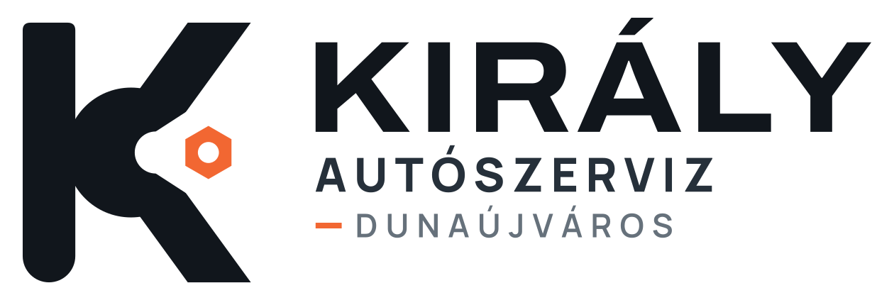
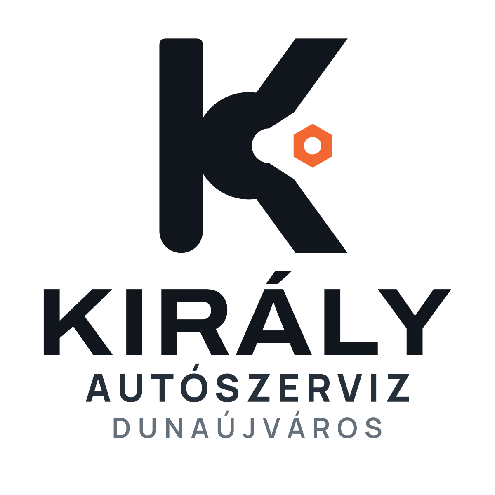
PNG · SVG · Weboldal-fejléc · Mobil fejléc


02 ENGINEERING
Egyetlen dugattyú hajtókarral, narancs fejjel. A motorjavítás szakmai jele, kompakt formában.
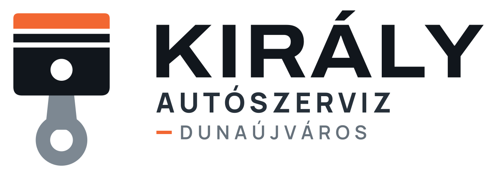
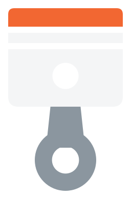
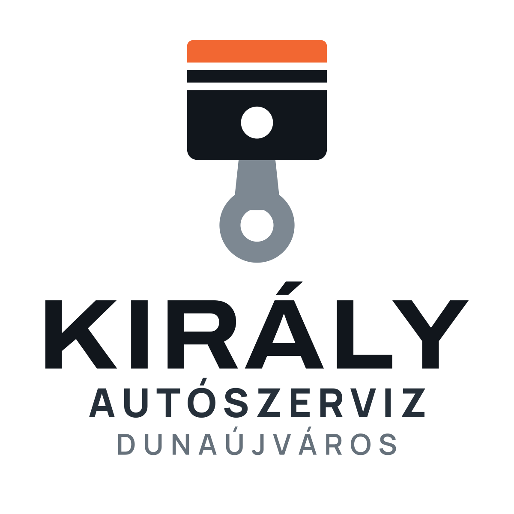
PNG · SVG · Weboldal-fejléc · Mobil fejléc


03 TECHNICAL PRECISION
Mérőóra letisztult skálával és narancs mutatóval – a pontos mérés és beállítás jele.
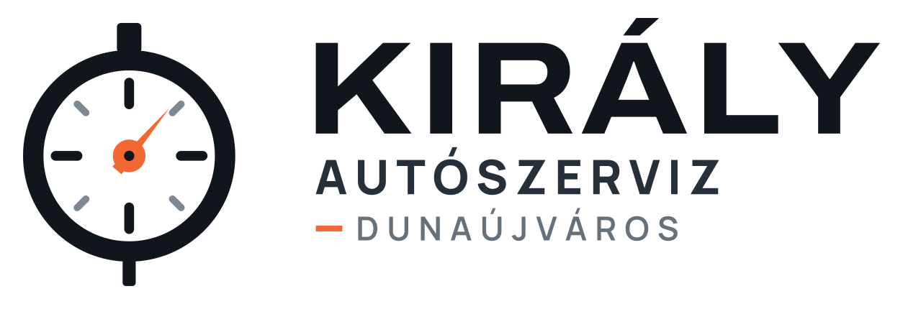
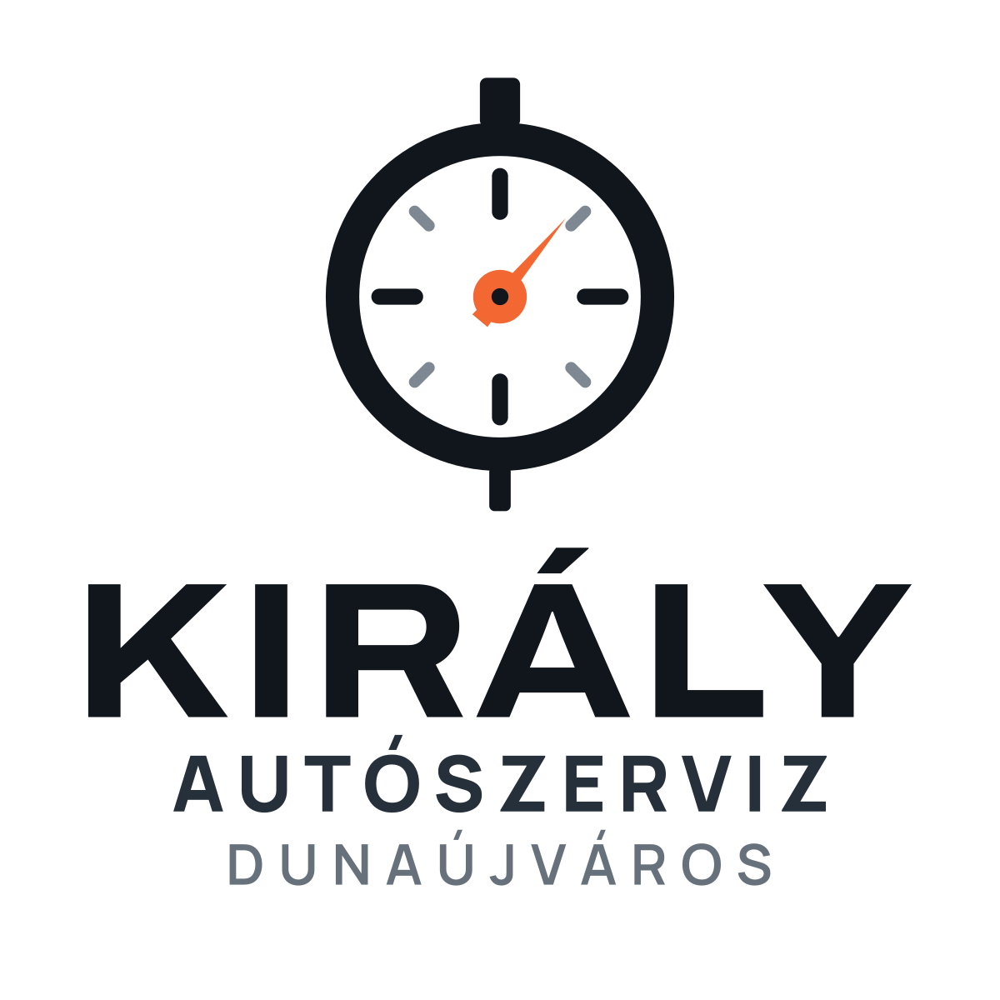
PNG · SVG · Weboldal-fejléc · Mobil fejléc